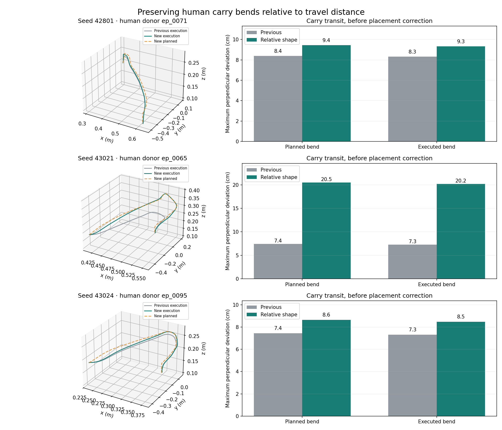

Seed 42801 · ep_0071
Executed carry bend: 8.3 → 9.3 cm from the straight transit chord. Total simulation duration 16.76 s.
New: sampled phase shape distributions (no donor template)
New: seed 43024 — current versus nominal Fabrics, two front-view videos
Version 5 · all videos at 1× actual simulation speed. .
The old 5.5–7.5 cm carry-residual cap could flatten a large human arc. Carry transit now uses:
new bend offset = (human bend offset / human travel distance) × new travel distance × sampled style gain
The individual donor shape, sampled bend placement, orientation timing, speed modulation and overshoot/undershoot remain. We kept the same five seeds and style draws as version 4; controller gains, simulator physics and success checks are unchanged. Pickup/alignment and withdrawal retain their existing limits.
Generate the full relative carry shape, execute it, and independently replay its saved actions. Accept only when collision/contact, completion and stable-stack checks pass. A failed execution can trigger a bounded carry-only reduction with every attempt retained. All five passed without reduction, so the fallback was not exercised. This checks actual execution; it is not an analytic collision-free planner and does not establish safety in every scene.

Gray: previous execution. Green: new execution. Dashed orange: new planned path. Bend magnitude is maximum perpendicular deviation from the straight start-to-transit-target chord, before the placement correction. This is distinct from overshoot magnitude. The executed transit ends at the point nearest that target.
| Seed | Human donor | Planned bend cm | Executed bend cm | Episode seconds |
|---|---|---|---|---|
| 42801 | ep_0071 | 8.4 → 9.4 | 8.3 → 9.3 | 16.66 → 16.76 |
| 42802 | ep_0080 | 7.5 → 7.6 | 6.6 → 6.7 | 13.38 → 13.40 |
| 43021 | ep_0065 | 7.4 → 20.5 | 7.3 → 20.2 | 14.48 → 15.50 |
| 43024 | ep_0095 | 7.4 → 8.6 | 7.3 → 8.5 | 16.28 → 16.30 |
| 43025 | ep_0043 | 6.6 → 6.6 | 6.3 → 6.3 | 12.96 → 12.96 |
Executed carry bend: 8.3 → 9.3 cm from the straight transit chord. Total simulation duration 16.76 s.
Executed carry bend: 7.3 → 20.2 cm from the straight transit chord. Total simulation duration 15.50 s.
Executed carry bend: 7.3 → 8.5 cm from the straight transit chord. Total simulation duration 16.30 s.
The strongest change is seed 43021: its source human shape has a larger arc that was previously compressed. Smaller donor arcs remain smaller; this does not inflate every trajectory.
Implementation, limits and provenance · Measurements · All physical checks ·
Historical Viser apps remain preserved; this report shows the new generator.